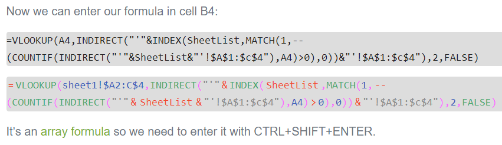

After installing [Htmlexpr.exe]. Open Excel and enable the Add-in.

The function can be used in 2 ways below:


Before and after formatting:

These functions are linked to the post itself:

The color of html elements can be changed by add these lines in the .css file:
.token.brace {color: #FF66FF;} .token.define.name, .token.operator {background-color: transparent;color: #fb3e2d;padding: 0 3px;} .token.function {color: #31A96E;} .token.logic.function {color: #5BB8E9;} .token.punctuation {color: #FF66FF;} .token.string {color: #8b8b8b;} .token.selector, .token.number, .token.boolean {color: #255dbc;}
To link the function to its articles (not trial), set your web URL (in htmlexpr.txt) as shown:


htmlexpr.txt and htmlexpr.lic is located at your document path.
To purchase Add-in, send us htmlexpr.lic then we will send back the corresponding htmlexpr.lic (licensed).
If there are any problems, contact: support@autechniques.com.
Related function
NUMBERTOWORDS (feature) Thiết lập phụ từ cho ứng dụng đọc số thành chữ (Ribbon).
FLOOKUP Nhập liệu nâng cao, hỗ trợ tra cứu (lọc) và xuất nhanh dữ liệu dựa trên từ khóa.
XGROUP Hàm mở rộng của GROUP. (hỗ trợ các hàm nâng cao).
Return to Home